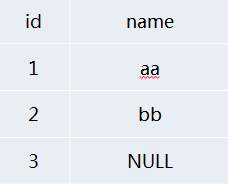
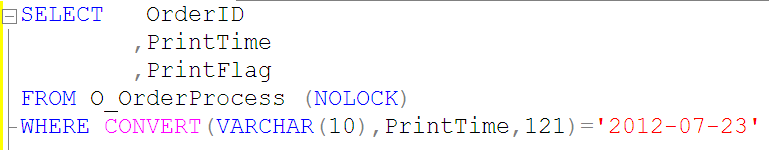
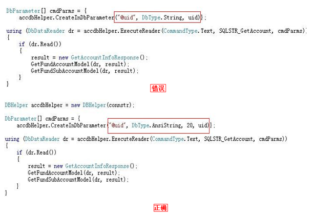

Selección de tipos de campo comunes
1. Para tipos de caracteres se recomienda usar tipos de datos varchar/nvarchar
2. Para montos y moneda se recomienda usar el tipo de datos money
3. Para notación científica se recomienda usar el tipo de datos numeric
4. Para identificadores autoincrementables se recomienda usar el tipo de datos bigint (cuando el volumen de datos crece, el tipo int no es suficiente, y luego la migración será problemática)
5. Para tipos de tiempo se recomienda usar el tipo de datos datetime
6. Prohibido usar los tipos de datos obsoletos text, ntext, image
7. Prohibido usar el tipo de datos xml, varchar(max), nvarchar(max)
Restricciones e índices
Cada tabla debe tener una clave primaria
- Cada tabla debe tener una clave primaria para garantizar la integridad de la entidad
- Una tabla solo puede tener una clave primaria (no se permiten valores nulos ni datos duplicados)
- Usar preferentemente claves primarias de un solo campo
No se permite usar claves foráneas
- Las claves foráneas aumentan la complejidad de los cambios en la estructura de tablas y la migración de datos
- Las claves foráneas afectan el rendimiento de las inserciones y actualizaciones; es necesario verificar las restricciones de claves primarias y foráneas
- La integridad de los datos debe ser controlada por el programa
Atributo NULL
En las tablas nuevas, se prohíbe NULL en todos los campos
（¿Por qué no se permite NULL en las tablas nuevas?
Permitir valores NULL aumenta la complejidad de la aplicación. Debes agregar código lógico específico para evitar varios errores inesperados.
Lógica de tres valores: todas las consultas con el operador igual ('=') deben incluir una verificación con ISNULL.
Null=Null, Null!=Null, not(Null=Null), not(Null!=Null) son todos unknown, no true.）
Por ejemplo:
Si los datos de la tabla son como se muestra en la figura:

Si quieres buscar todos los datos excepto aquellos donde name='aa', y sin darte cuenta usas SELECT * FROM NULLTEST WHERE NAME<>'aa'
El resultado no es el esperado; de hecho, solo obtiene los registros con name='bb' y no los registros con name=NULL.
Entonces, para buscar todos los datos excepto name='aa', solo podemos usar la función ISNULL.
SELECT * FROM NULLTEST WHERE ISNULL(NAME,1)<>'aa'
Pero quizás muchos no sepan queISNULL puede causar graves cuellos de botella de rendimiento, por lo que muchas veces es mejor limitar la entrada del usuario a nivel de aplicación, asegurando que ingrese datos válidos antes de realizar la consulta.
Al agregar campos a tablas existentes, se debe permitir NULL (para evitar actualizar todos los datos de la tabla y causar bloqueos al mantener bloqueos prolongados).(Esto se debe principalmente a la refactorización de tablas existentes).
Criterios de diseño de índices
- Se deben crear índices para las columnas utilizadas frecuentemente en la cláusula WHERE
- Se deben crear índices para las columnas utilizadas frecuentemente para unir tablas
- Se deben crear índices para las columnas utilizadas frecuentemente en la cláusula ORDER BY
- No se deben crear índices en tablas pequeñas (tablas que usan solo unas pocas páginas), porque un escaneo completo de la tabla puede ser más rápido que una consulta que usa un índice.
- El número de índices por tabla no debe superar 6
- No crear índices de una sola columna en campos de baja selectividad
- Aprovechar al máximo las restricciones únicas
- Los índices no deben incluir más de 5 campos (incluidas las columnas INCLUDE)
No crear índices de una sola columna en campos de baja selectividad
- SQL Server tiene requisitos de selectividad para las columnas indexadas; si la selectividad es demasiado baja, SQL Server descartará su uso.
- Campos no aptos para crear índices: género, 0/1, TRUE/FALSE
- Campos aptos para crear índices: ORDERID, UID, etc.
Aprovechar al máximo los índices únicos
El índice único le proporciona a SQL Server la información de que una columna no tiene valores duplicados. Cuando el analizador de consultas encuentra un registro mediante un índice único, sale inmediatamente y no continúa buscando en el índice.
El número de índices por tabla no debe superar 6
El número de índices por tabla no debe superar 6 (esta regla fue establecida por los DBA de Ctrip después de realizar pruebas...)
- Los índices aceleran la consulta, pero afectan el rendimiento de escritura.
- Los índices de una tabla deben crearse de forma integral considerando todos los SQL relacionados con esa tabla, intentando fusionarlos.
- El principio del índice compuesto es que los campos con mejor filtrado se colocan al principio.
- El exceso de índices no solo aumenta el tiempo de compilación, sino que también afecta la selección del mejor plan de ejecución por parte de la base de datos.
Consultas SQL
- Prohibido realizar operaciones complejas en la base de datos
- Prohibido usar SELECT *
- Prohibido usar funciones o cálculos en columnas indexadas
- Prohibido usar cursores
- Prohibido usar disparadores
- Prohibido especificar índices en las consultas
- Los tipos de variables/parámetros/campos de relación deben coincidir con el tipo de campo
- Consultas parametrizadas
- Limitar el número de JOINs
- Limitar la longitud de las sentencias SQL y el número de condiciones en la cláusula IN
- Evitar en lo posible operaciones de transacciones grandes
- Desactivar la devolución de información del recuento de filas afectadas
- Salvo que sea necesario, todas las sentencias SELECT deben incluir NOLOCK
- Usar UNION ALL en lugar de UNION
- Para consultar grandes volúmenes de datos, usar paginación o TOP
- Limitación de niveles en consultas recursivas
- Usar NOT EXISTS en lugar de NOT IN
- Tablas temporales y variables de tabla
- Usar variables locales para seleccionar un plan de ejecución intermedio
- Evitar en lo posible usar el operador OR
- Agregar manejo de excepciones en las transacciones
- Las columnas de salida usan un formato de nomenclatura de dos partes
Prohibido realizar operaciones complejas en la base de datos
- Análisis de XML
- Comparación de similitud de cadenas
- Búsqueda de cadenas (CHARINDEX)
- Las operaciones complejas deben realizarse en el lado de la aplicación
Prohibido usar SELECT *
- Reducir el consumo de memoria y el ancho de banda de red
- Dar al optimizador de consultas la oportunidad de leer las columnas necesarias desde el índice
- Los cambios en la estructura de la tabla pueden provocar errores en las consultas fácilmente.
Prohibido usar funciones o cálculos en columnas indexadas
En la cláusula WHERE, si el índice es parte de una función, el optimizador ya no usará el índice y realizará un escaneo completo de la tabla.
Suponiendo que existe un índice en el campo Col1, los siguientes escenarios no podrán usar el índice:
ABS[Col1]=1
[Col1]+1>9
Otro ejemplo para ilustrar:

Una consulta como la anterior no podrá usar el índice PrintTime de la tabla O_OrderProcess, por lo que deberíamos usar la consulta SQL como se muestra a continuación.

Prohibido usar funciones o cálculos en columnas indexadas
Suponiendo que existe un índice en el campo Col1, los siguientes escenarios podrán usar el índice:
[Col1]=3.14
[Col1]>100
[Col1] BETWEEN 0 AND 99
[Col1] LIKE 'abc%'
[Col1] IN(2,3,5,7)
Problemas de índice en consultas LIKE
1. [Col1] LIKE 'abc%' – index seek: aquí se utiliza la búsqueda por índice.
2. [Col1] LIKE '%abc%' – index scan: en este caso no se usa la búsqueda por índice.
3.[Col1] like “%abc” – index scan: esto tampoco utiliza la consulta por índice.
Creo que con los tres ejemplos anteriores, deberían comprender que es mejor no usar coincidencias difusas al principio de la condición LIKE, de lo contrario no se utilizará la consulta por índice.
Prohibido usar cursores
Las bases de datos relacionales son adecuadas para operaciones de conjuntos, es decir, operaciones de conjuntos sobre el conjunto de resultados determinado por la cláusula WHERE y las columnas seleccionadas. El cursor es una vía que se proporciona para operaciones que no son de conjuntos. En general, las funciones implementadas con cursores suelen equivaler a las implementadas por un bucle en el cliente.
El cursor coloca el conjunto de resultados en la memoria del servidor y procesa los registros uno a uno mediante un bucle; el consumo de recursos de la base de datos (especialmente memoria y recursos de bloqueo) es muy grande.
(Además, los cursores son realmente complejos y no muy prácticos, así que trate de usarlos lo menos posible).
Prohibido usar disparadores
Los disparadores son opacos para la aplicación (a nivel de aplicación no se sabe cuándo se activará un disparador, ni siquiera se sabe que ocurrió; resulta confuso...).
Prohibido especificar índices en las consultas
With(index=XXX) (Generalmente usamos With(index=XXX) para especificar un índice en una consulta).
- Con los cambios en los datos, el rendimiento del índice especificado en la consulta puede no ser el óptimo.
- Los índices deberían ser transparentes para la aplicación. Si el índice especificado se elimina, la consulta dará un error, lo cual no facilita la resolución de problemas.
- Los índices recién creados no pueden ser utilizados inmediatamente por la aplicación; solo surten efecto después de publicar el código.
Los tipos de variables/parámetros/campos de relación deben coincidir con el tipo de campo (esto es algo a lo que no prestaba mucha atención antes)
Evite la conversión de tipos, que consume CPU adicional; el escaneo de tablas grandes que provoca es particularmente grave.


Después de ver las dos imágenes anteriores, creo que no necesito explicaciones; todos deberían tenerlo claro.
Si el tipo de campo de la base de datos es VARCHAR, en la aplicación es mejor especificar el tipo como AnsiString y definir claramente su longitud.
Si el tipo de campo de la base de datos es CHAR, en la aplicación es mejor especificar el tipo como AnsiStringFixedLength y definir claramente su longitud.
Si el tipo de campo de la base de datos es NVARCHAR, en la aplicación es mejor especificar el tipo como String y definir claramente su longitud.
Consultas parametrizadas
Las siguientes formas pueden parametrizar el SQL de consulta:
sp_executesql
Prepared Queries
Stored procedures
Usemos una imagen para explicarlo, jaja.


Limitar el número de JOINs
- El número de JOIN de tablas en una sola sentencia SQL no puede exceder de 5.
- Un número excesivo de JOIN puede hacer que el analizador de consultas elija un plan de ejecución incorrecto.
- Demasiados JOIN consumen mucho al compilar el plan de ejecución.
Limitar el número de condiciones en la cláusula IN
Incluir una gran cantidad de valores (miles) en la cláusula IN puede consumir recursos y devolver los errores 8623 o 8632; se exige que el número de condiciones en la cláusula IN se limite a 100 como máximo.
Evitar en lo posible operaciones de transacciones grandes
- Inicie transacciones solo cuando los datos necesiten actualizarse, reduciendo el tiempo de retención de bloqueos de recursos.
- Agregue un mecanismo de preprocesamiento de captura de excepciones de transacciones.
- Prohibido el uso de transacciones distribuidas en bases de datos.
Usemos una imagen para explicarlo.

Es decir, no deberíamos hacer commit tran después de que se hayan actualizado las 1000 filas de datos. Piensa si al actualizar estas mil filas estás ocupando exclusivamente los recursos, lo que impide que otras transacciones puedan procesarse.
Desactivar la devolución de información del recuento de filas afectadas
En las sentencias SQL, establezca explícitamente Set Nocount On para cancelar el retorno del recuento de filas afectadas y reducir el tráfico de red.
Salvo que sea necesario, todas las sentencias SELECT deben incluir NOLOCK.
Salvo que sea necesario, todas las sentencias SELECT deben incluir NOLOCK
Especificar que se permiten lecturas sucias. No se emiten bloqueos compartidos para impedir que otras transacciones modifiquen los datos leídos por la transacción actual; los bloqueos exclusivos establecidos por otras transacciones no impiden que la transacción actual lea los datos bloqueados. Permitir lecturas sucias puede generar más operaciones concurrentes, pero su costo es leer modificaciones de datos que luego serán revertidas por otras transacciones. Esto puede hacer que la transacción falle, muestre al usuario datos nunca confirmados, o que el usuario vea dos veces un registro (o no lo vea en absoluto).
Usar UNION ALL en lugar de UNION.
Usar UNION ALL en lugar de UNION
UNION elimina duplicados y ordena el conjunto de resultados SQL, lo que aumenta el consumo de CPU, memoria, etc.
Para consultar grandes volúmenes de datos, usar paginación o TOP
Limite razonablemente el número de registros devueltos para evitar cuellos de botella en IO y ancho de banda de red.
Limitación de niveles en consultas recursivas
Use MAXRECURSION para evitar que un CTE recursivo irrazonable entre en un bucle infinito.
Tablas temporales y variables de tabla

Usar variables locales para seleccionar un plan de ejecución intermedio
En un procedimiento almacenado o consulta, si se accede a una tabla con una distribución de datos muy desigual, a menudo el procedimiento almacenado o la consulta usarán un plan de ejecución subóptimo o incluso deficiente, lo que causa problemas como High CPU y muchas lecturas de IO. Usar variables locales evita elegir un plan de ejecución incorrecto.
Con el enfoque de variables locales, SQL no conoce el valor de la variable local al compilar; en ese momento, SQL "adivina" un valor de retorno basado en la distribución general de los datos de la tabla. Sin importar el valor de la variable que el usuario proporcione al llamar al procedimiento almacenado o la sentencia, el plan generado es el mismo. Este plan suele ser más moderado; no necesariamente es el óptimo, pero generalmente tampoco será el peor.
Si en la consulta la variable local usa un operador de desigualdad, el analizador de consultas usa un simple cálculo del 30% para estimar.
Estimated Rows =(Total Rows * 30)/100
Si en la consulta la variable local usa un operador de igualdad, el analizador de consultas estima usando: precisión * número total de registros de la tabla.
Estimated Rows = Density * Total Rows
Evitar en lo posible usar el operador OR
Para el operador OR, normalmente se usa un escaneo de tabla completo; considere dividirlo en varias consultas con UNION/UNION ALL. Aquí hay que asegurarse de que la consulta pueda usar el índice y devolver un conjunto de resultados pequeño.
Agregar manejo de excepciones en las transacciones
La aplicación debe manejar imprevistos y hacer Rollback de manera oportuna.
Establecer la propiedad de conexión “set xact_abort on”.
Las columnas de salida usan un formato de nomenclatura de dos partes
Formato de nomenclatura de dos partes: nombre de tabla.nombre de campo.
En TSQL con relaciones JOIN, los campos deben indicar a qué tabla pertenecen; de lo contrario, tras futuros cambios en la estructura de las tablas, podría ocurrir un error de compatibilidad de programa "Ambiguous column name".
Diseño de arquitectura
- Separación de lectura y escritura.
- Desacoplamiento del schema.
- Ciclo de vida de los datos.
Separación de lectura y escritura
- Considere la separación de lectura y escritura desde el diseño, incluso si lectura y escritura usan la misma base de datos; esto facilita una rápida ampliación.
- Según las características de lectura, divida las lecturas en lectura en tiempo real y lectura diferible, correspondiendo respectivamente a la base de datos de escritura y a la base de datos de lectura.
- En la separación de lectura y escritura se debe considerar el cambio automático al lado de escritura cuando la lectura no esté disponible.
Desacoplamiento de Schema
Prohibido JOIN entre bases de datos.
Ciclo de vida de los datos
Según la frecuencia de uso de los datos, archive periódicamente las tablas grandes en bases de datos separadas.
Separación física entre la base de datos principal y la base de datos de archivo.
Las tablas de tipo log deben particionarse o dividirse en tablas
Para tablas grandes se debe realizar particionamiento; la operación de particionamiento distribuye tablas e índices en múltiples particiones. Mediante el cambio de particiones se puede reemplazar rápidamente las particiones antiguas por las nuevas, acelerando la limpieza de datos y reduciendo en gran medida el consumo de recursos IO.
Las tablas con escrituras frecuentes deben particionarse o dividirse en tablas
Autoincremento y Latch Lock.
El latch (cerrojo) es solicitado y controlado internamente por SQL Server; el usuario no puede intervenir. Se usa para garantizar la consistencia de las estructuras de datos en memoria; el nivel de bloqueo es a nivel de página.
Fuente: http://www.codeceo.com/article/sql-server-tips.html
Haz clic para compartir notas
<p style="font-size:14px;">¡La nota debe ser una ampliación del contenido de este artículo!</p><br> <p style="font-size:12px;"><a href="../tougao.html" target="_blank">Para enviar un artículo, haga clic aquí</a></p> <p style="font-size:14px;"><a href="./runoob-user-test-intro.html" target="_blank">Cómo obtener el código de invitación de registro</a></p> <h3 class="text-muted"><i class="fa fa-info-circle" aria-hidden="true"></i> ¡Antes de compartir notas debe<a href=".." class="runoob-pop">iniciar sesión</a>!</h3> <p><a href="./runoob-user-test-intro.html" target="_blank">Cómo obtener el código de invitación de registro</a></p>